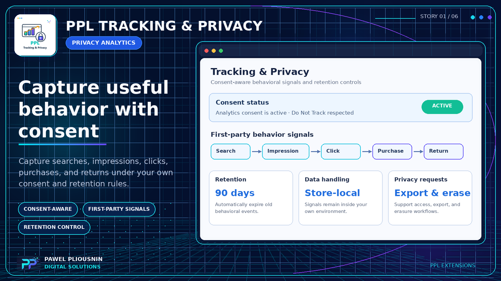
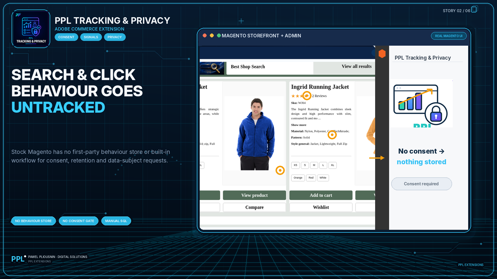
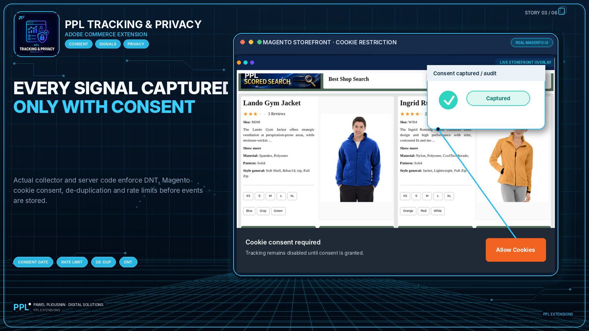
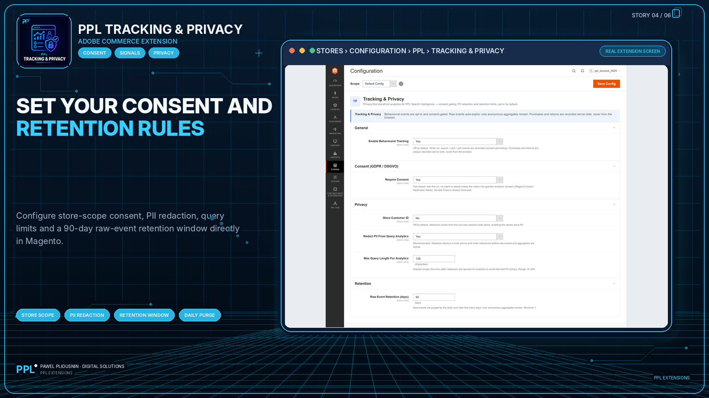

Clear ownership
Search relevance does not secretly become the tracking system. Tracking owns raw behavior events, consent and DSR workflows.
PPL Tracking & Privacy gives merchants a consent-aware way to capture and aggregate first-party storefront signals such as searches, result impressions, clicks, purchases and returns. It is designed to own consent, audit, retention, PII redaction and data-subject tooling instead of hiding those responsibilities inside a search module.

The module can collect consent-gated behavior events, aggregate them into behavior, query and query/product statistics, and purge raw events according to a configured retention window. Data stays in the merchant's Magento installation and is not sent to PPL or a third-party analytics service by the extension.
Search Intelligence can run without behavior tracking. When behavior signals are wanted, Tracking & Privacy is the separate owner for consent and raw-event responsibility.
Search relevance does not secretly become the tracking system. Tracking owns raw behavior events, consent and DSR workflows.
Optional consumers such as Search Intelligence can use neutral aggregated behavior, product or zero-result signals when installed and allowed.
Search and filters remain useful without behavioral signals, which is important for stores with stricter privacy policies.

Control collection and retention from the Magento admin area under PPL Hub.

Scheduled jobs build behavior, query and product statistics from allowed events.

Export or erase a data subject's data using the included CLI tooling.